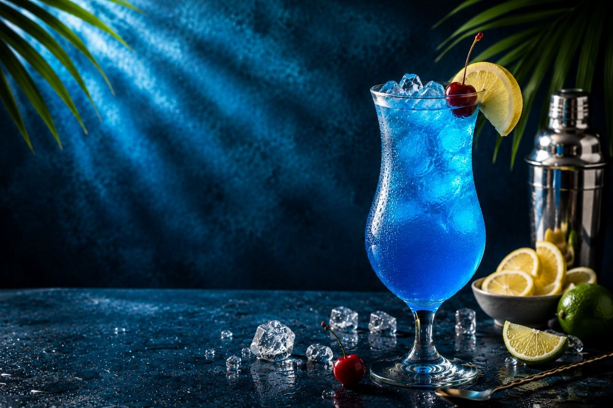
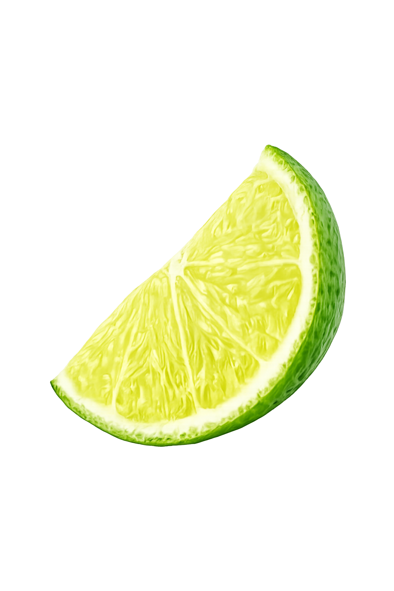

A refreshing blue cocktail with citrus flavors and a vibrant tropical twist.
180 kcal
Easy
5 mins
0 mins
Fill a tall serving glass with plenty of ice cubes.
Pour the vodka and blue curaçao syrup over the ice.
Add chilled lemonade or Sprite and stir gently to combine.
Decorate with a lemon slice, a cherry, and fresh mint leaves.
Give the drink a gentle stir to blend all the flavors.
Serve immediately and enjoy your refreshing Blue Lagoon.

Try delicious recipes only on Flavora.